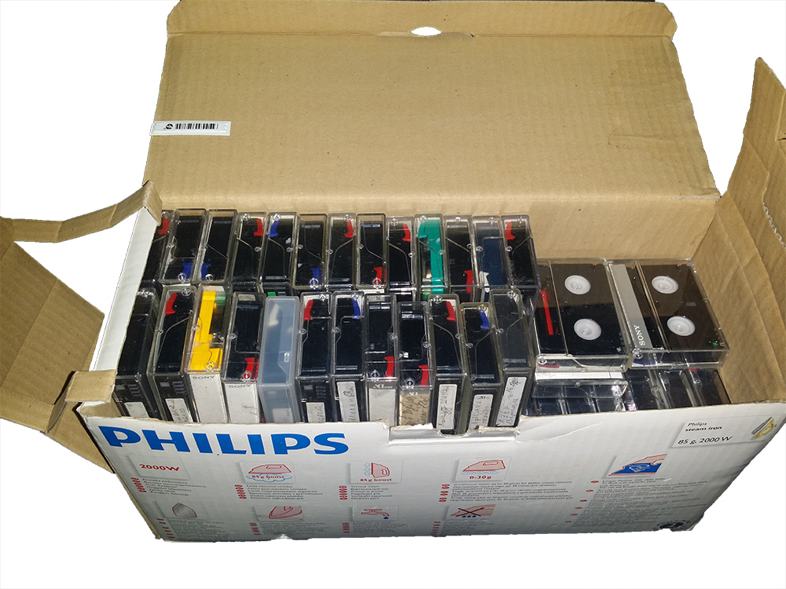
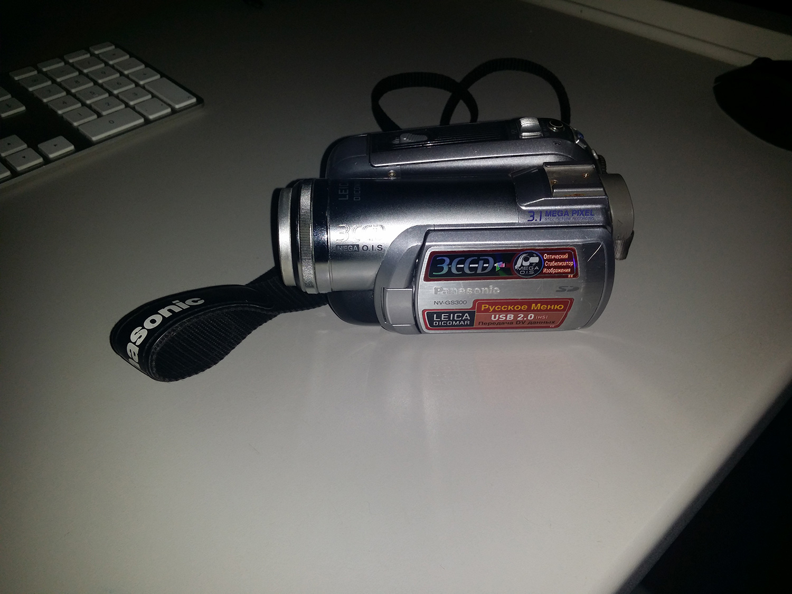

Оцифровка видеокассеты MiniDV
cats: Прочее
tags:
2017-07-31 02-52 otsifrovka-videokassety-minidv\
Однажды мне принесли камеру и коробку из под утюга, набитую видеокассетами. Так получилось, что моё знакомство с видео началось сразу с цифровых носителей и моей первой камерой был телефон Acer на андроиде. Как выяснилось скопировать видео с кассеты нельзя, его можно только "захватывать". Я долго мучился с этим вопросом, так как ни одной нормальной инструкции по данному процессу нет. В итоге я нашёл решение и хочу им поделиться.Не буду вдаваться в подробности как я искал способ копирования, просто расскажу что нужно делать.
- Ставим камеру в режим воспроизведения
- Перематываем кассету в начало
- Подключаем камеру по usb
- Захватываем поток программой MiniDV.exe или sclive.exe
- Когда видео захвачено, оно весит очень много и его лучше перекодировать в другой формат, например с помощью VidCoder
Более подробно показано на видео

Во всех инструкциях, что я видел говорили про какой-то разъём IEEE-1394 и говорят, что он лучше usb. Чем именно он лучше не понятно, мой способ не требует никаких специальных проводов и плат и позволяет оцифровать видеокассету через usb.
И напоследок пара фотографий того, с чем мне пришлось работать:
[caption id="attachment_919" align="alignnone" width="1000"] В коробке около 100 кассет[/caption] [caption id="attachment_920" align="alignnone" width="1500"] Камера, которой засняли все эти кассеты[/caption]
MiniDV зеркало http://www.mediafire.com/file/wxaxhc4x7rhxc4g/MiniDV.zip
{kind=link}